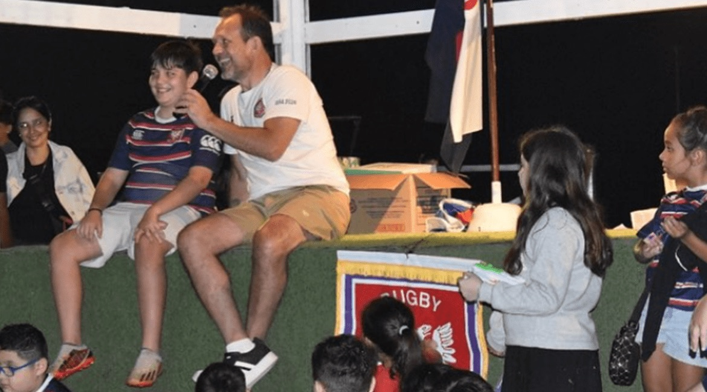

2024: balance de un año brillante
El presidente Ricardo Villano repasa el año deportivo e institucional del club y los desafíos para 2025.

“2024 fue brillante tanto desde el plano deportivo como desde lo institucional”, dijo Ricardo Villano, presidente del Ateneo Cultural y Deportivo Don Bosco, al comenzar una entrevista con Bernal TV. Fue durante la fiesta de Fin de Temporada, el 14 de diciembre de 2024 en la sede deportiva, que sirvió de marco para cerrar el año.
Después de enumerar los logros deportivos y de recordar los eventos en los que la URBA nos confió ser sede, el presidente se detuvo en la importancia de la familia y del trabajo en conjunto para el desarrollo de los jóvenes. El objetivo es que los chicos estén en el club y no en la calle: un espacio para hacer deporte y encontrarse con amigos, con objetivos deportivos que se complementan con el colegio.
2025: un año de desafíos
En lo deportivo, el club aspira al ascenso de categoría y a un futuro en Primera A de la mano de un plantel superior de más de 100 jugadores. También quiere seguir creciendo en cantidad de jugadores juveniles e infantiles y desarrollar el plantel femenino de rugby.
Para cerrar, Ricardo recordó la cercanía que Don Bosco tuvo siempre con los más jóvenes, con el deporte como un medio de formación divertido y no como un fin en sí mismo. Hoy el club mantiene el legado de quien le dio el nombre y su convicción de formar “honrados ciudadanos”.
La entrevista terminó con un saludo a la audiencia de Bernal TV y el deseo de cumplir todos los objetivos en 2025 y de perseverar en la unidad de las familias.